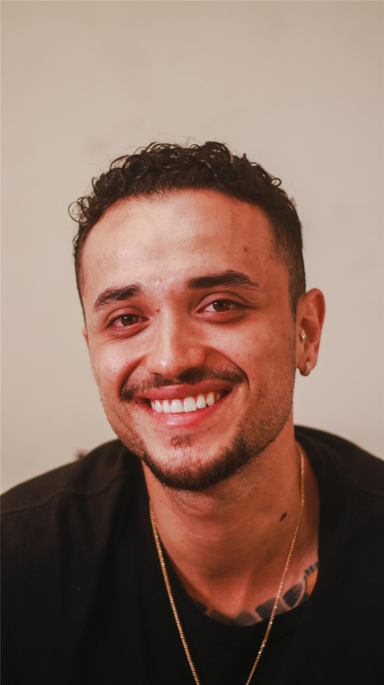
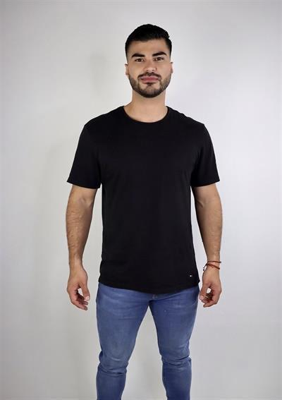
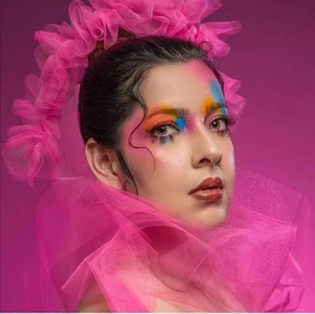
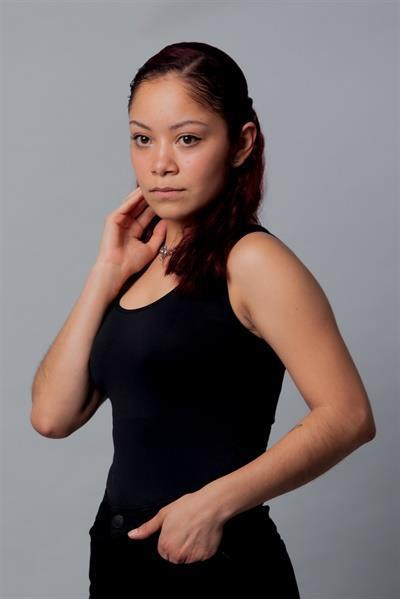
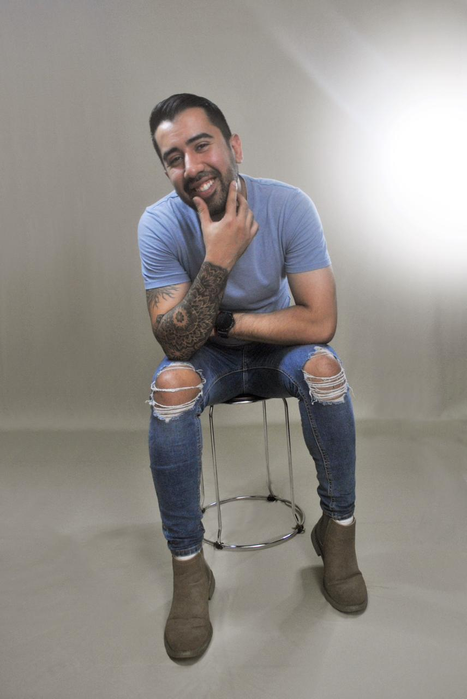

⌖
Necesito talento
Explore el roster y los perfiles de deleFOCO SELECT en el catálogo visual.
Explorar Talento →CASTING · TALENTO
Actores · Modelos · Extras · Bailarines · Músicos · Performers · Presentadores — Costa Rica · Centroamérica · Producciones internacionales
TRES CAMINOS
Elija cómo quiere trabajar con deleFOCO: explorar, delegar o publicar.
Explore el roster y los perfiles de deleFOCO SELECT en el catálogo visual.
Explorar Talento →deleFOCO gestiona todo el proceso: búsqueda, audiciones, selección y contrato.
Solicitar Casting →Publique su convocatoria en Oportunidades; usted gestiona y el talento aplica directamente.
Publicar Casting →QUÉ OFRECEMOS
Ocho servicios, desde un spot hasta una producción internacional.
Talento para campañas publicitarias.
Cine, series y TV.
Talento de Costa Rica para producciones extranjeras.
Extras, público, grupos y familias.
Perfiles difíciles de encontrar.
Búsqueda de nuevos talentos según su brief.
Gestión integral del proceso, de principio a fin.
Representación del talento seleccionado.
POR QUÉ deleFOCO
Conocemos el talento de la región y gestionamos el proceso completo.
Con sede en San José. Servicios de producción en Costa Rica y Centroamérica desde hace más de 17 años.
Agencia de casting y red de talentos: actores, modelos, extras, músicos y bailarines.
Organiza shnit San José, festival global de cortos, en su decimosexta edición en 2026.
Escuela publicada en delefoco.com: +1.500 estudiantes, +100 profesores, +300 talleres y +200 masterclasses.
CÓMO FUNCIONA
Usted siempre sabe en qué etapa está su casting.
Cuéntenos perfiles, fechas y alcance de su producción.
Seleccionamos candidatos de nuestro roster según su brief.
Organizamos audiciones y callbacks con el talento.
Gestionamos el contrato y el pago del talento.
CASOS DE ÉXITO
Proyectos reales del portafolio público de deleFOCO.
Talento para un comercial de Claro en Costa Rica.
Casting deleFOCO hizo la búsqueda y la selección para el spot.
Publicado en el portafolio de deleFOCO como casting realizado.
Casting para el largometraje Italia 90.
Búsqueda de talento y casting coordinados en Costa Rica.
En el portafolio público, con still de la producción.
Casting para un comercial de Sardimar.
deleFOCO gestionó el casting del comercial de la marca.
Documentado en el portafolio con un cuadro del comercial.
Casting para el cortometraje costarricense SOLAZ.
Búsqueda de perfiles y selección para el corto.
Publicado en el portafolio de deleFOCO.
Spot del Festival Global de Cortometrajes shnit San José.
deleFOCO produce el festival y los spots de campaña.
El festival llegó a su decimosexta edición en 2026.
Casting y producción para un comercial de Dos Pinos.
deleFOCO hizo el casting y la producción de la marca en 2013.
En el portafolio público. La foto es referencia de estudio, no el spot.
TAMBIÉN EN EL PORTAFOLIO PÚBLICO
CATÁLOGO VISUAL
Perfiles destacados del directorio público de Casting deleFOCO.

Moda

Comercial

Actuación

Comercial

Moda

Comercial
Comercial
Actuación

Actuación

Comercial
Ningún perfil coincide con estos filtros.
Perfiles destacados del directorio público. Edad y ciudad son rangos del catálogo para filtrar; la ficha completa abre en delefoco.com.
SOLICITAR CASTING
deleFOCO gestiona el proceso de principio a fin: complete el brief y le contactamos.
PUBLICAR CASTING
Usted gestiona la selección y el talento aplica directamente en Oportunidades.
PREGUNTAS FRECUENTES
Lo que más nos preguntan sobre casting.
Depende de los perfiles y la cantidad de talentos. Con su brief le entregamos un cronograma estimado.
Sí. Conectamos talento de Costa Rica y Centroamérica con producciones extranjeras.
En Solicitar Casting, deleFOCO gestiona el contrato y el pago del talento (paso 4).
Escríbanos su brief y evaluamos cada caso según país, fechas y perfiles.
Solicitar: deleFOCO gestiona todo el proceso. Publicar: usted autopublica su convocatoria en Oportunidades, gestiona la selección y el talento aplica directamente.
Casting conectado al ecosistema deleFOCO.